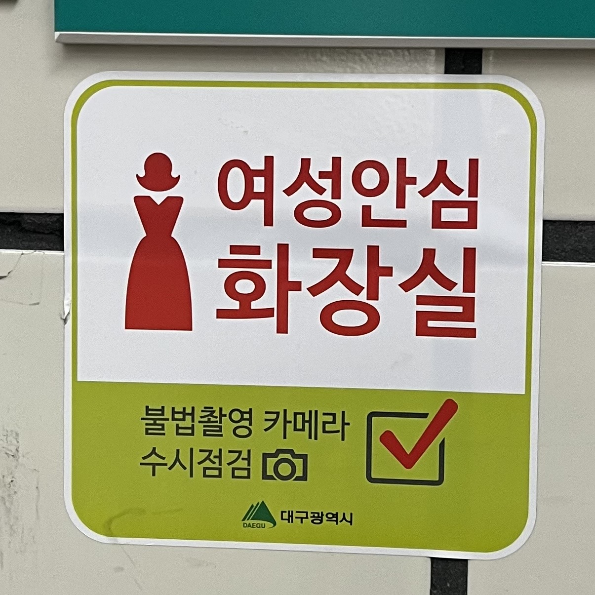
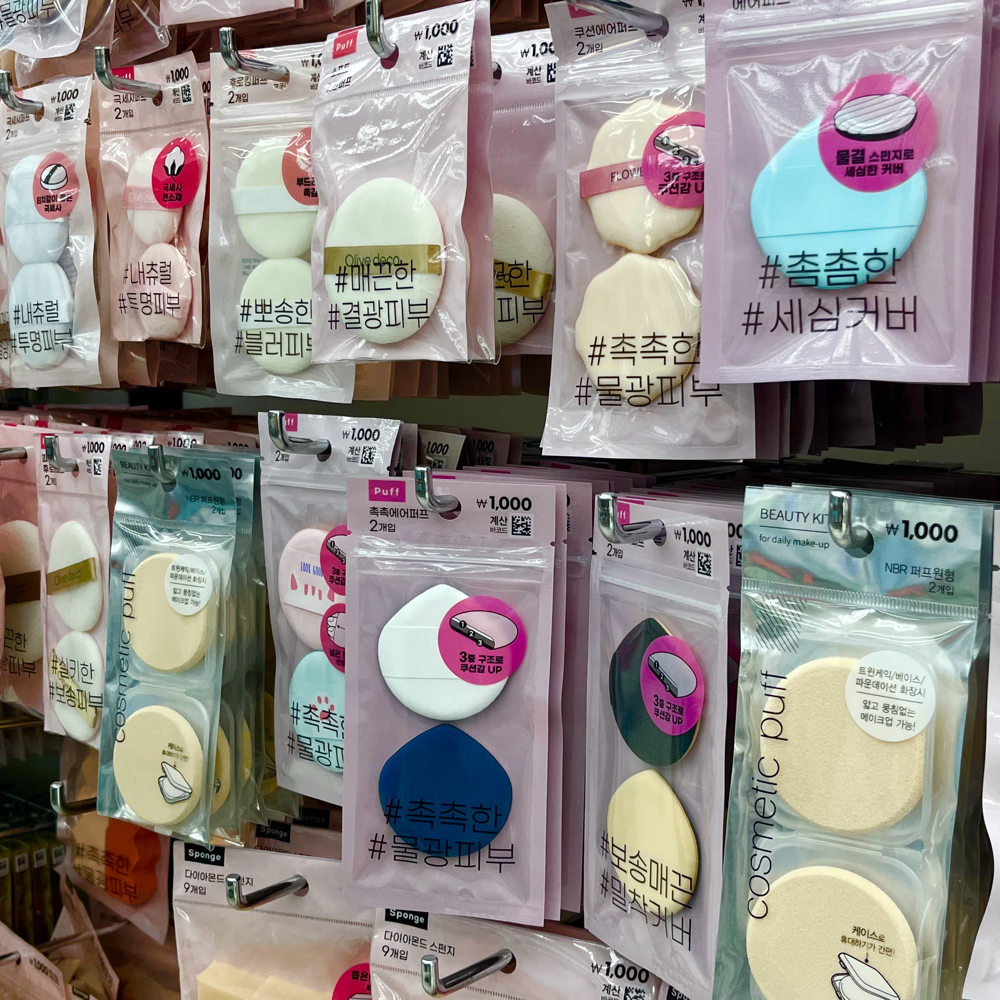
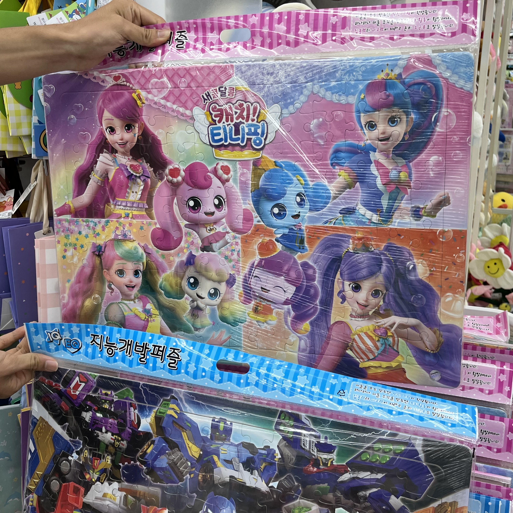
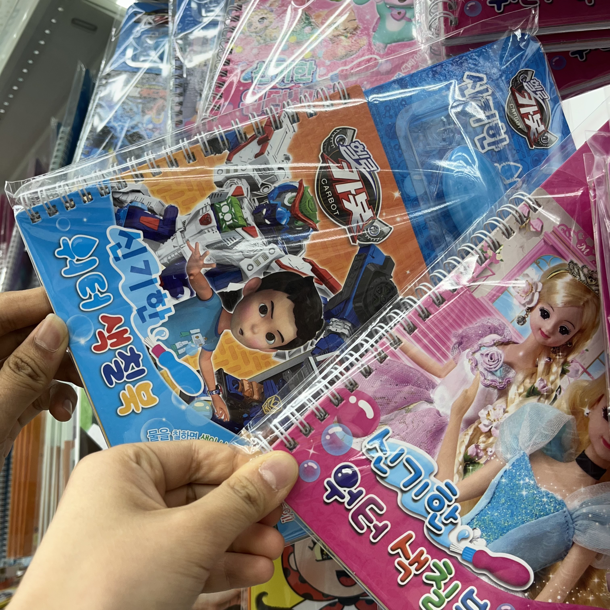
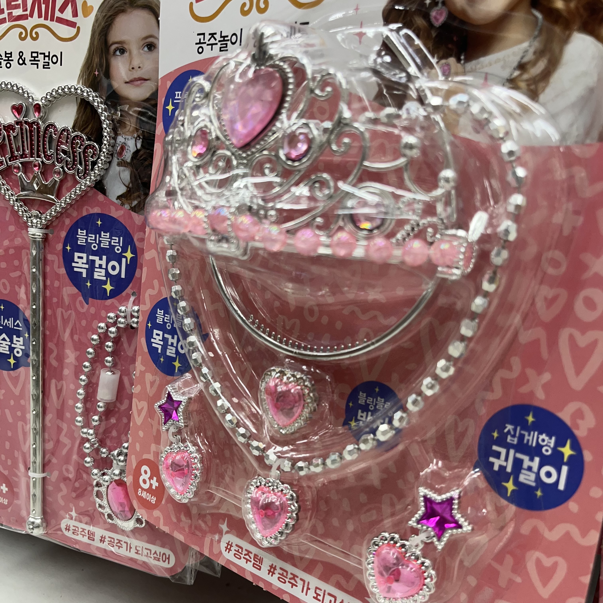
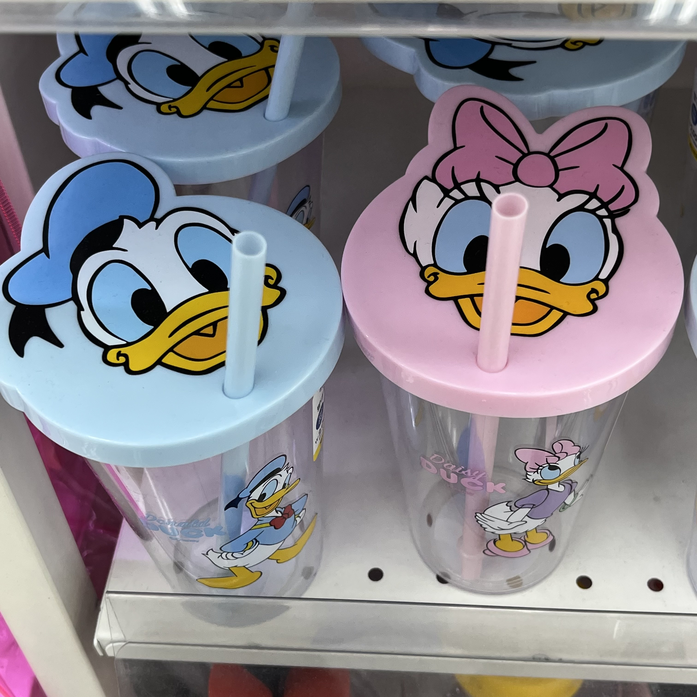

색과 성별
성별에 관련된 색 이야기
일반적으로 우리는 성별과 관련된 색을 이야기할 때 여자는 분홍색이나 빨간색 등 붉은색, 남자는 파란색이라고 생각하는 경우가 많다. 특정 색상이 성별을 구분하게 된 건 언제부터인지 그 과정은 어떠한지 궁금하여 찾아보았다. 약 100년 전인 1910년도까지만 해도 지금과는 반대였다. 분홍색은 열정적인 느낌을 주어서 남자아이에게, 파란색은 차분한 느낌을 주어서 여자아이에게 어울리는 색으로 여겨졌다. 하지만 시간이 지나면서 아기 용품이나 장난감, 마케팅 등의 영향으로 지금의 인식이 점점 새겨진 것 같다. 특정 색에 대해 ‘여자답다'라거나 ‘남자답다'라는 고정관념은 색깔이 원래 가지고 있는 이미지, 성별에 따른 특성이 아니라 시대 상황에 따라 다르게 변화해 왔다는 것이다.
사례
     일상 속에서 찾아본 사례들이다. 지하철이나 공공장소에서 쉽게 볼 수 있는 공중화장실 표시이다. 이런 곳에서는 대부분 남자는 파란색, 여자는 빨간색으로 표시되어 있다. 또한 여성들이 주로 사용하는 화장품은 거의 다 분홍색, 남성용 화장품은 파란 계열이 많은 것을 확인할 수 있다. 또 어린이들의 장난감에서 남자아이가 나오거나 로봇 등이 나오면 파란색, 공주나 여자아이가 나오면 분홍색이었다. 물병에서도 물병 뚜껑이 파란색과 분홍색으로 구분되었다. 탈취제나 스포츠 용품에서 남성이 모델인 경우 배경이 파란색이거나 파란색 옷을 입고 있는 경우가 있었다. 이처럼 생각보다 많은 간판이나 제품에서 특정 색이 성별을 나누고 있는 것을 찾아볼 수 있었다.
문제점과 해결방안
성별에 특정한 색이 정해져 있다고 생각하는 것은 고정관념이다. 고정관념은 차별 뿐만 아니라 다양성을 줄일 수도 있다. 또 남자가 분홍색을 좋아하거나, 여자가 파란색을 좋아하는데에 있어 편견을 가질 수도 있게 한다. 사람들이 자유롭게 자신의 개성을 표현하거나 좋아하는 것을 즐기는게 이러한 사회적 시선이나 편견 때문에 제한 될 수도 있다. 특히나 어린이들의 장난감에 특정 색이 정해져 있는 것은 어린 시절부터 고정된 인식을 쌓아가는 것일 수 있기 때문에 좋지 않다고 생각한다. 따라서 우리는 색상의 다양성을 인정하고 특정 성별을 나타내는 색이 정해져 있다는 고정관념을 버리는 것이 중요하다. 광고나 간판, 제품 등에서도 여자는 빨간색, 남자는 파란색 이렇게 고정된 색상을 쓰지 않고 다양한 색상을 쓰는 것이 중요하다.